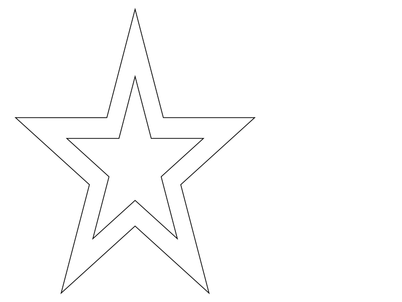
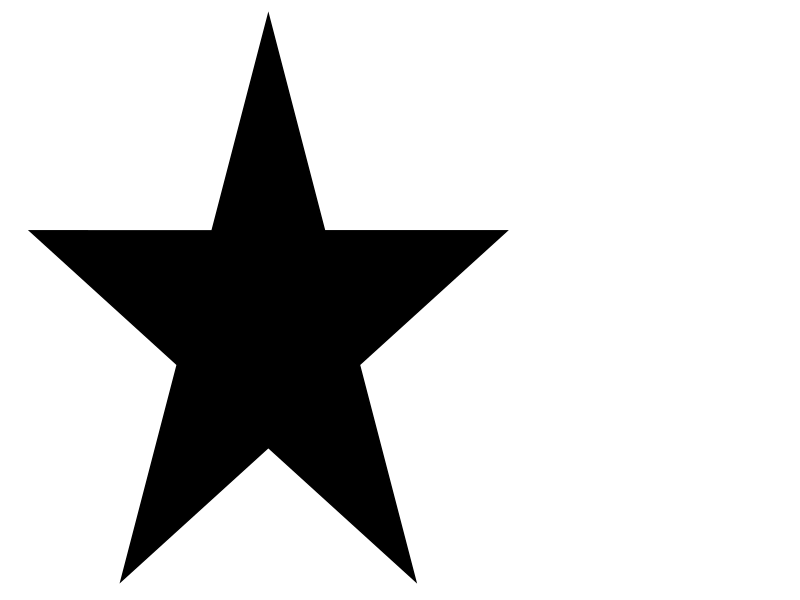

<hr>
<span (click)="onStarClick()" style="cursor: pointer">
  <mat-icon *ngIf="!isClicked">star</mat-icon>
  <mat-icon *ngIf="isClicked">star_border</mat-icon>
</span>
<hr>
<!-- <div *ngIf="isToggled; else elseBlock">

</div>
<ng-template #elseBlock>

</ng-template> -->
<svg version="1.1"
     baseProfle="full"
     width="300"
     height="200"
     xmlns="http://www.w3.org/2000/svg">
  <rect width="100%" height="100%" fill="black" />
  <circle cx="150" cy="100" r="85" fill="blue" />
</svg>
<hr>
<div style="cursor: pointer;" (click)="onClickToggle()">
  <div *ngIf="!isToggled">
    
  </div>
  <div *ngIf="isToggled">
  
  </div>
</div>
<hr>
<div *ngIf="isSelected == true; else elseBlock" style="cursor: pointer;">
  
</div>
<ng-template #elseBlock style="cursor: pointer;">
  
</ng-template>
<div (click)="onStarClick()">
  <div *ngIf="isClicked">
    <svg width="800" height="600" xmlns="http://www.w3.org/2000/svg" style="cursor: pointer;">
      <!-- Created with Method Draw - http://github.com/duopixel/Method-Draw/ -->
      <g>
        <title>background</title>
        <rect fill="#fff" id="canvas_background" height="602" width="802" y="-1" x="-1"/>
        <g display="none" overflow="visible" y="0" x="0" height="100%" width="100%" id="canvasGrid">
        <rect fill="url(#gridpattern)" stroke-width="0" y="0" x="0" height="100%" width="100%"/>
        </g>
      </g>
      <g>
        <title>Layer 1</title>
        <path stroke="#000" id="svg_1" d="m89.25,249.95403l138.65465,0l42.84535,-161.95404l42.84538,161.95404l138.65463,0l-112.17376,100.09195l42.84757,161.95404l-112.17381,-100.09468l-112.17379,100.09468l42.84758,-161.95404l-112.1738,-100.09195z" stroke-width="1.5" fill="#000000"/>
      </g>
    </svg>
  </div>
  <div *ngIf="!isClicked">
    <svg width="800" height="600" xmlns="http://www.w3.org/2000/svg" style="cursor: pointer;">
      <!-- Created with Method Draw - http://github.com/duopixel/Method-Draw/ -->
      <g>
       <title>background</title>
       <rect fill="#fff" id="canvas_background" height="602" width="802" y="-1" x="-1"/>
       <g display="none" overflow="visible" y="0" x="0" height="100%" width="100%" id="canvasGrid">
        <rect fill="url(#gridpattern)" stroke-width="0" y="0" x="0" height="100%" width="100%"/>
       </g>
      </g>
      <g>
       <title>Layer 1</title>
       <path stroke="#000" id="svg_1" d="m89.25,249.95403l138.65465,0l42.84535,-161.95404l42.84538,161.95404l138.65463,0l-112.17376,100.09195l42.84757,161.95404l-112.17381,-100.09468l-112.17379,100.09468l42.84758,-161.95404l-112.1738,-100.09195z" stroke-width="1.5" fill="#fff"/>
      </g>
     </svg>
  </div>
</div>

